LINEの使い方
LINEの基本的な使い方を、わかりやすく紹介します。
学習メニュー
友だちを追加する
LINEで友だちを追加する方法を紹介します。
手順 1 LINEを開く
ホーム画面にある「LINE」アプリをタップします。
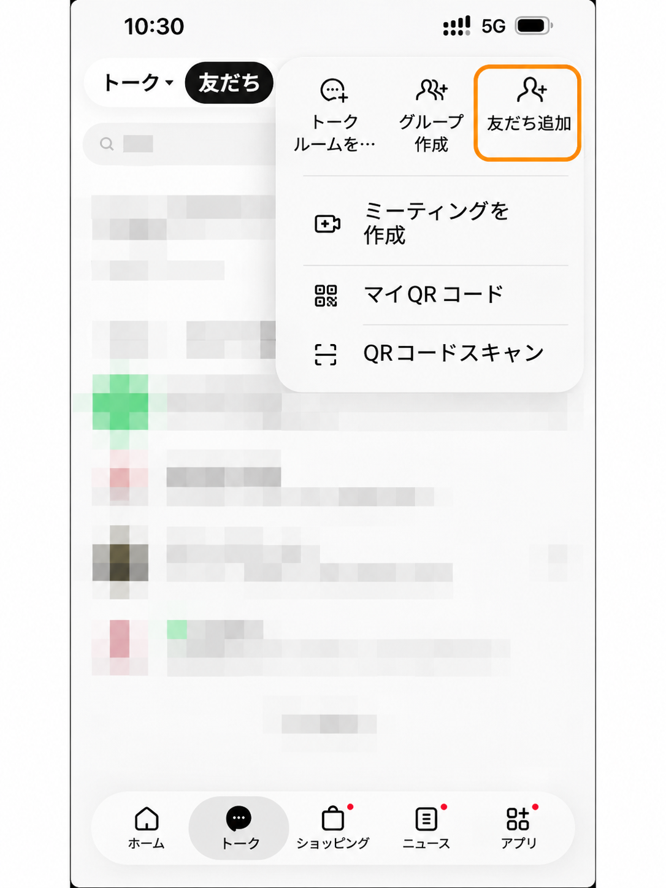
手順 2 友だち追加画面を開く
LINEの「トーク」画面で、右上にある「友だち追加」ボタンをタップします。
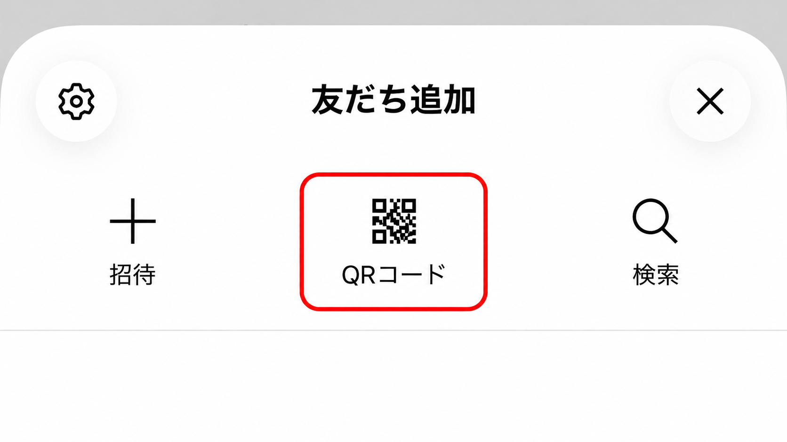
手順 3 QRコードを選ぶ
「友だち追加」画面で「QRコード」をタップします。
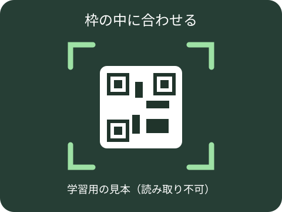
手順 4 QRコードを読み取る
カメラを友だちのQRコードに向けて、 四角い枠の中に入れます。
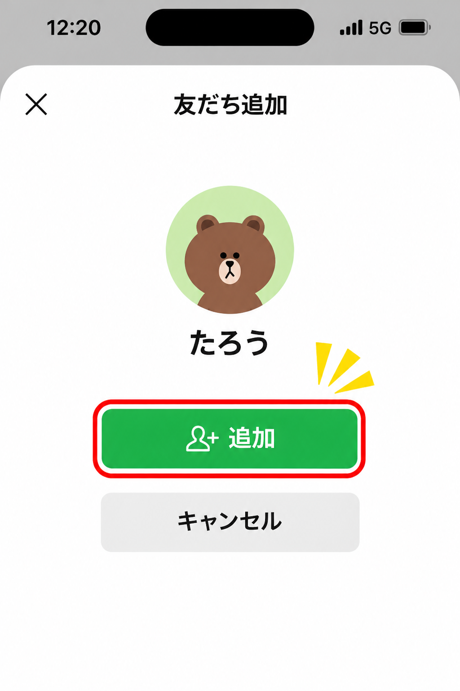
手順 5 友だちを追加する
相手の名前とプロフィールを確認して、「追加」をタップします。
メッセージを送る
LINEでメッセージを送る方法を紹介します。
手順 1 LINEを開く
ホーム画面にある「LINE」アプリをタップします。
手順 2 トークを開く
「トーク」画面から、メッセージを送りたい友だちの名前をタップします。
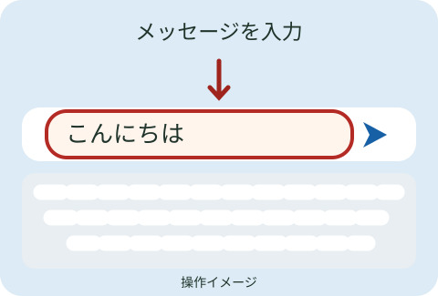
手順 3 メッセージを入力する
画面下のメッセージ入力欄をタップして、送りたい文章を入力します。
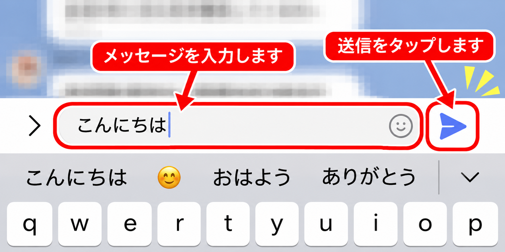
手順 4 メッセージを送信する
入力した文章を確認して、右側の送信ボタンをタップします。
写真を送る
LINEで写真を送る方法を紹介します。
手順 1 トークを開く
「トーク」画面で、写真を送りたい友だちの名前をタップします。
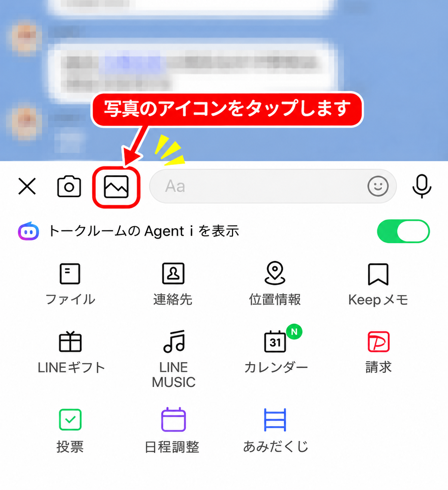
手順 2 写真アイコンをタップ
画面下にある写真のアイコンをタップします。
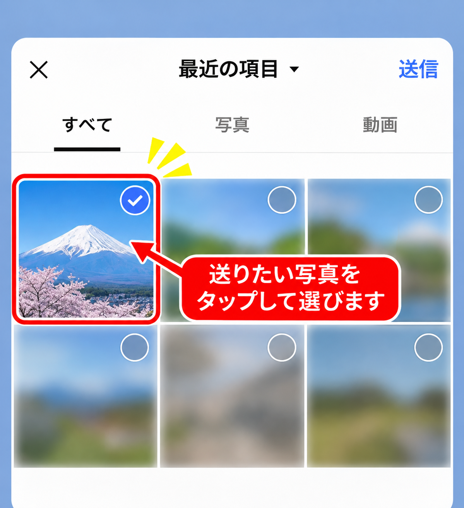
手順 3 写真を選ぶ
表示された写真の中から、送りたい写真をタップして選びます。
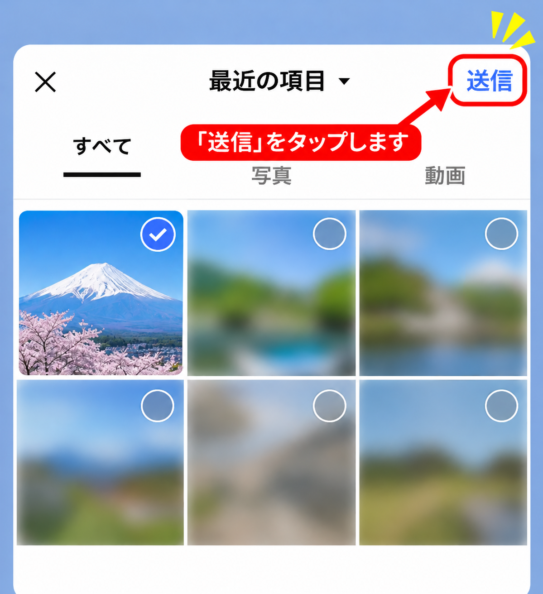
手順 4 写真を送信する
写真を選んだら、画面右上の送信ボタンをタップします。
スタンプを送る
LINEでスタンプを送る方法を紹介します。
手順 1 トークを開く
「トーク」画面から、スタンプを送りたい友だちを選びます。
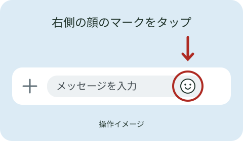
手順 2 スタンプのマークをタップする
メッセージ入力欄の右側にある、顔のマークをタップします。
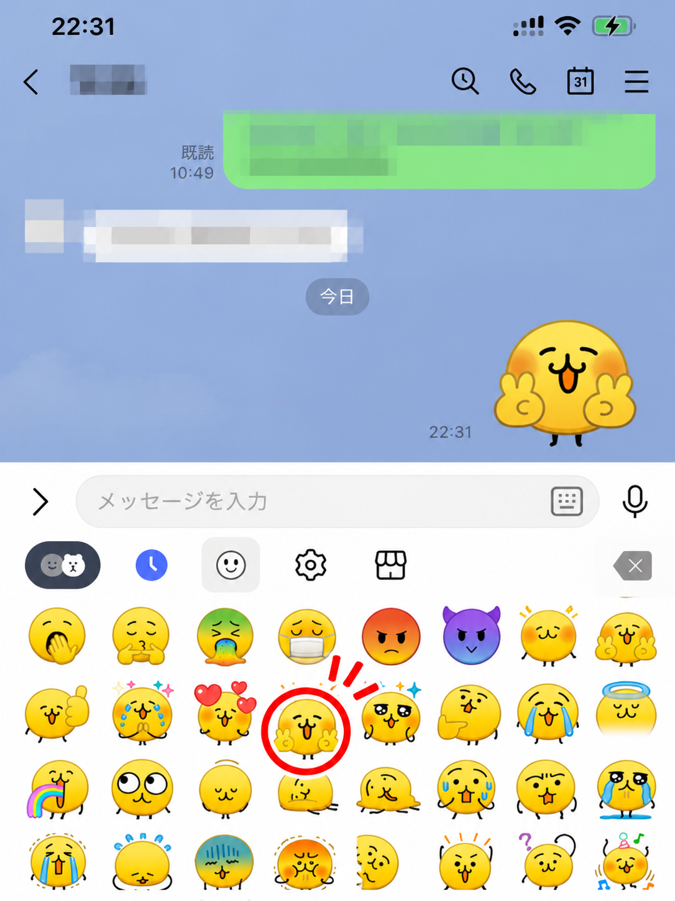
手順 3 スタンプを選ぶ
表示されたスタンプの中から、送りたいものをタップします。
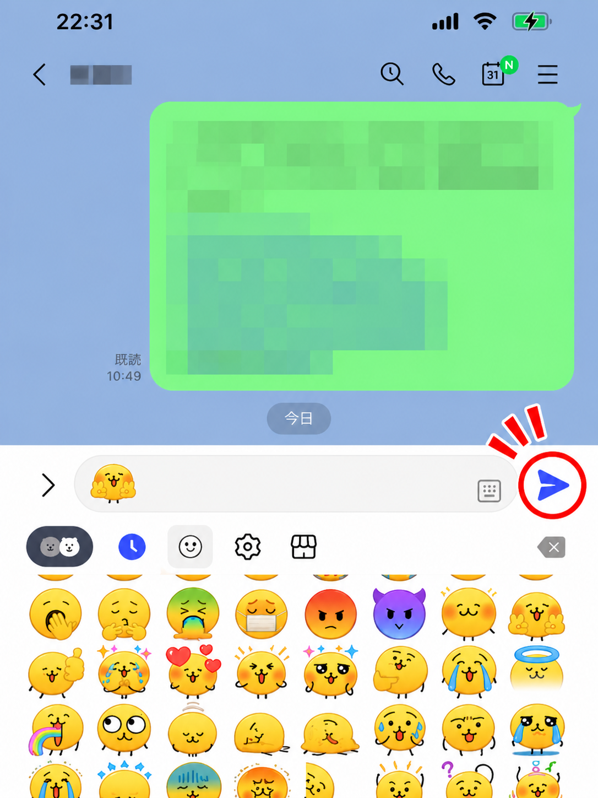
手順 4 スタンプを送信する
選んだスタンプを確認して、送信ボタンをタップします。